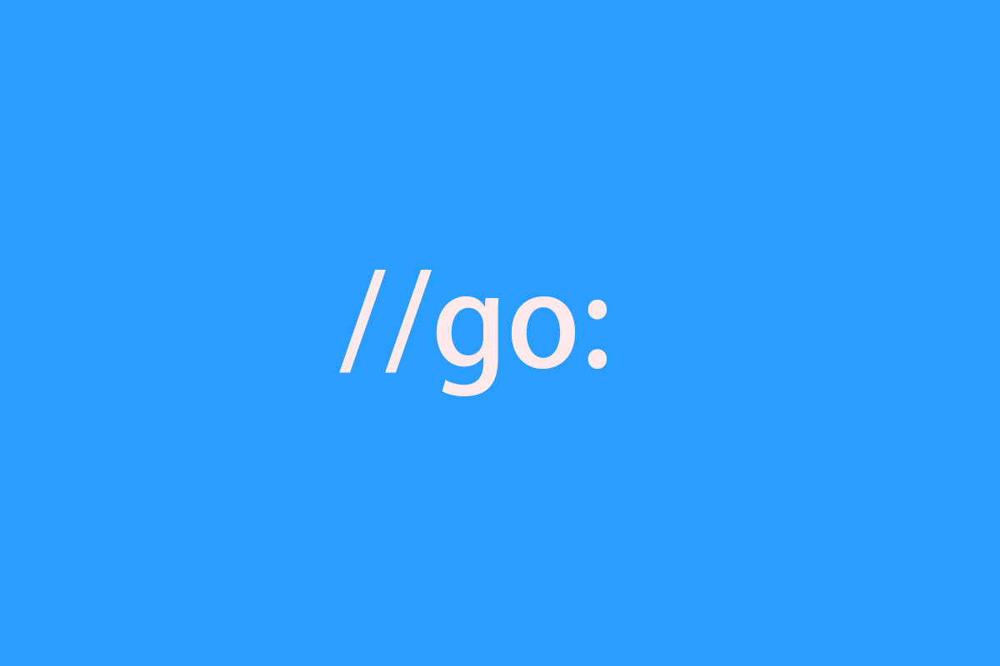

1.8 簡單圍觀一下有趣的 //go: 指令

前言
如果你平時有翻看原始碼的習慣，你肯定會發現。咦，怎麼有的方法上面總是寫著 //go: 這類指令呢。他們到底是幹嘛用的？
今天我們一同揭開他們的面紗，我將簡單給你介紹一下，它們都負責些什麼
go:linkname
//go:linkname localname importpath.name
該指令指示編譯器使用 importpath.name 作為原始碼中宣告為 localname 的變數或函式的目標檔案符號名稱。但是由於這個偽指令，可以破壞型別系統和包模組化。因此只有引用了 unsafe 包才可以使用
簡單來講，就是 importpath.name 是 localname 的符號別名，編譯器實際上會呼叫 localname 。但前提是使用了 unsafe 包才能使用
案例
time/time.go
...
func now() (sec int64, nsec int32, mono int64)
runtime/timestub.go
import _ "unsafe" // for go:linkname
//go:linkname time_now time.now
func time_now() (sec int64, nsec int32, mono int64) {
sec, nsec = walltime()
return sec, nsec, nanotime() - startNano
}
在這個案例中可以看到 time.now，它並沒有具體的實作。如果你初看可能會懵逼。這時候建議你全域性搜尋一下原始碼，你就會發現其實作在 runtime.time_now 中
配合先前的用法解釋，可得知在 runtime 包中，我們聲明瞭 time_now 方法是 time.now 的符號別名。並且在檔案頭引入了 unsafe 達成前提條件
go:noescape
//go:noescape
該指令指定下一個有宣告但沒有主體（意味著實作有可能不是 Go）的函式，不允許編譯器對其做逃逸分析
一般情況下，該指令用於記憶體分配最佳化。因為編譯器預設會進行逃逸分析，會透過規則判定一個變數是分配到堆上還是棧上。但凡事有意外，一些函式雖然逃逸分析其是存放到堆上。但是對於我們來說，它是特別的。我們就可以使用 go:noescape 指令強制要求編譯器將其分配到函式棧上
案例
// memmove copies n bytes from "from" to "to".
// in memmove_*.s
//go:noescape
func memmove(to, from unsafe.Pointer, n uintptr)
我們觀察一下這個案例，它滿足了該指令的常見特性。如下：
- memmove_*.s：只有宣告，沒有主體。其主體是由底層彙編實作的
- memmove：函式功能，在棧上處理效能會更好
go:nosplit
//go:nosplit
該指令指定檔案中宣告的下一個函式不得包含堆疊溢位檢查。簡單來講，就是這個函式跳過堆疊溢位的檢查
案例
//go:nosplit
func key32(p *uintptr) *uint32 {
return (*uint32)(unsafe.Pointer(p))
}
go:nowritebarrierrec
//go:nowritebarrierrec
該指令表示編譯器遇到寫屏障時就會產生一個錯誤，並且允許遞迴。也就是這個函式呼叫的其他函式如果有寫屏障也會報錯。簡單來講，就是針對寫屏障的處理，防止其死迴圈
案例
//go:nowritebarrierrec
func gcFlushBgCredit(scanWork int64) {
...
}
go:yeswritebarrierrec
//go:yeswritebarrierrec
該指令與 go:nowritebarrierrec 相對，在標註 go:nowritebarrierrec 指令的函式上，遇到寫屏障會產生錯誤。而當編譯器遇到 go:yeswritebarrierrec 指令時將會停止
案例
//go:yeswritebarrierrec
func gchelper() {
...
}
go:noinline
該指令表示該函式禁止進行內聯
案例
//go:noinline
func unexportedPanicForTesting(b []byte, i int) byte {
return b[i]
}
我們觀察一下這個案例，是直接透過索引取值，邏輯比較簡單。如果不加上 go:noinline 的話，就會出現編譯器對其進行內聯最佳化
顯然，內聯有好有壞。該指令就是提供這一特殊處理
go:norace
//go:norace
該指令表示禁止進行競態檢測。而另外一種常見的形式就是在啟動時執行 go run -race，能夠檢測應用程式中是否存在雙向的資料競爭。非常有用
案例
//go:norace
func forkAndExecInChild(argv0 *byte, argv, envv []*byte, chroot, dir *byte, attr *ProcAttr, sys *SysProcAttr, pipe int) (pid int, err Errno) {
...
}
go:notinheap
//go:notinheap
該指令常用於型別宣告，它表示這個型別不允許從 GC 堆上進行申請記憶體。在執行時中常用其來做較低層次的內部結構，避免排程器和記憶體分配中的寫屏障。能夠提高效能
案例
// notInHeap is off-heap memory allocated by a lower-level allocator
// like sysAlloc or persistentAlloc.
//
// In general, it's better to use real types marked as go:notinheap,
// but this serves as a generic type for situations where that isn't
// possible (like in the allocators).
//
//go:notinheap
type notInHeap struct{}
總結
在本文我們簡單介紹了一些常見的指令集，我建議僅供瞭解。一般我們是用不到的，因為你的瓶頸可能更多的在自身應用上
但是瞭解這一些，對你瞭解底層原始碼和執行機制會更有幫助。如果想再深入些，可閱讀我給出的參考連結 ：）